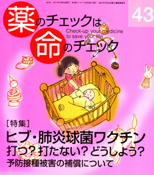

No.43�@[���W]�@�q�u�E�x�����ۃ��N�`���@�łH�ł��Ȃ��H�ǂ����悤�H�@2011�N7���@���s
�\�h�ڎ��
���ɂ���āA����ɂ����
���낢��ł��B
���A���{�Řb��ɂȂ��Ă���̂�
�V���������ꂽ
�q�u���N�`���A�x�����ۃ��N�`���AHPV���N�`��
�ȑO���炠�邯��ǁA�Q�����ɂȂ��Ă���
�|���I�����N�`��
�ق��ɂ��A�O�퍬���A�͂����ABCG�ȂǁE�E�E
�\�h���ʂƊQ��p�Ƃ̃o�����X��
��������l���܂��傤�B
������
�@Main Feature ���W�@�q�u�E�x�����ۃ��N�`��
�@�� ���܂��炾���Ǖ��������m�肽���@
�@�@�\�h�ڎ��@�@�@�\�J�c���r����ɕ���
�@�@�@�@�@�@�@�@�ҏW��
�@�� ���┠�y�ԊO�ҁz
�@�@�q�u�A�x�����ہA�q�{�N�`���̕]���́H
�@�@�q�u���N�`���Ɣx�����ۃ��N�`���̓����ڎ�͑��v�H
�@�@HPV�i�q�{��j���N�`���̕]���́H
�@�� �ې��������Ƃ́H�@�@�@�@�@�@�@�@�@�@�@�@�@�@�ҏW��
�@�� ���k��
�@�@�łH�@�ł��Ȃ��H�@��t�̖{�������@�@�@�@�@�����E/�J�c���r/�l�Z�Y
�@�@�@�@�u�w�Ƃ́H
�@�@�@�@�����ˑR���nj�Q�iSIDS�j�Ƃ́H
�@�@�@�@�������Q�Ɠ����ˑR���nj�Q�iSIDS�j�Ƃ̊W
�@�� �\�h�ڎ�ɂ�錒�N��Q�̕⏞�@�@�@�@�@�@�@�@�@�G�{�M�F
�@�� �q�u�E�x�����ۃ��N�`���̐ڎ�ĊJ�͎��������@�@�l�@�Z�Y
�@�@�ڎ풆�~����ĊJ�܂ł̂���܂�
�@�@�Ȃ����N�`���ڎ��̓ˑR�����N���邩
�@Second Feature 2011�t�N�V�}
�@�� �s���Ă��܂���
�@�@�������̂̎��ӂł��b�����f���Ă��܂����@�@�@�@���茛��
�@�@��������l�����������̂��Ɓ@�����̂��Ɓ@�@�@�@�،��N��
�@�� �V�E�s���̎��_
�@�@�t�N�V�}���s���̕��������߂Ă���@�@�@�@�@�@�@�I�����p
�@�@Series �A��
�@�� �����[�G�b�Z�C�@���z���@�@�@�@�@�@�@�@�@�@�@�@�ΐ�K�}
�@�� �݂�Ȃ̂₳���������ϗ�(43)�@���V�a���L�@�@�@�J�c���r
�@�@Others
�@�� �R�[�q�[�����
�@�� ��t���Ǝ����ɒ��킵�悤�I�I
�@�� ��t���Ǝ����̉�
�@�� �u����ē�/�����\��
�@�� ���┠�@�|�s�h�����[�h��s�I�N�^�j���̊Q�́H
�@�@�@ �@�@�AO-157��O-111�ɂǂ��Ώ���������̂ł��傤�H
�@�@�@ �@�@�B�n�A�ۊ����ǂւ̃A���L�V�V�����g�p�́H
�@�@�@ �@�@�C�_�Y���̋ۂ͑��v�H
�@�@�@ �@�@�D�W�A�[�p���͌���g�p�H�@�K�{�H
�@�� �ǎ҂̐�
�@�� ���]
�@�� �o�b�N�i���o�[�ꗗ�@/�@���А\���p��
�@�� �ҏW��L/���t